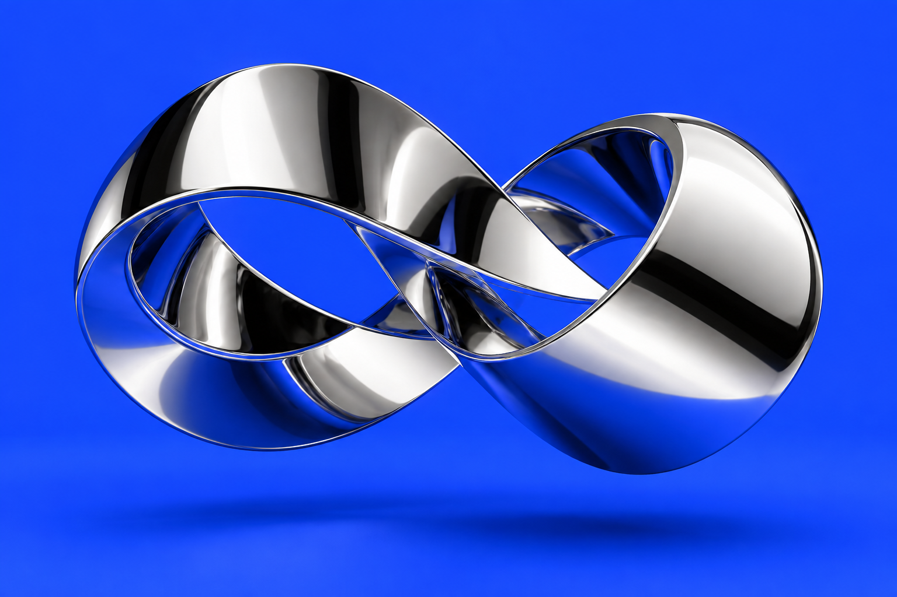
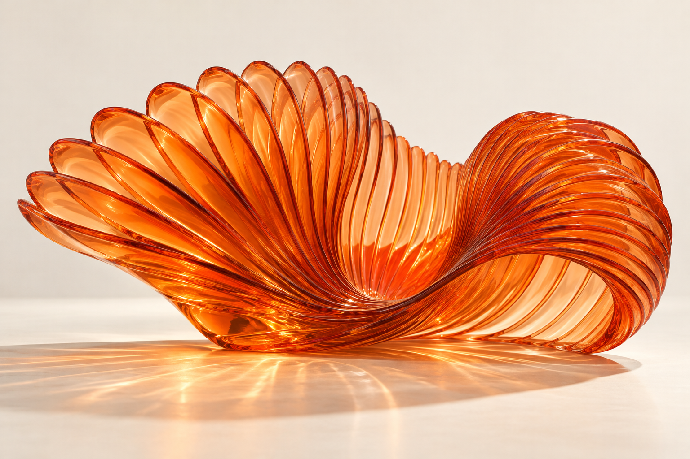
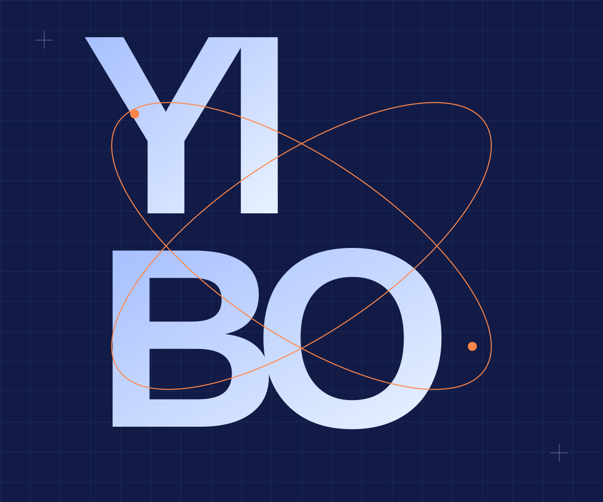

FORM / THE SHAPE OF LIGHT01FORM STUDY
PERSONAL CONCEPT
PERSONAL CONCEPT
光的形状FORM.
当一束光，成为一个可以触碰的想法。
镜面、曲线与空间的视觉实验。
设计，让想象拥有形状。
视觉设计 · 动态叙事 · 数字体验
FORM / THE SHAPE OF LIGHT当一束光，成为一个可以触碰的想法。
镜面、曲线与空间的视觉实验。
 AURA / SOUND UNBOUND
AURA / SOUND UNBOUND把听觉，变成一场看得见的感官出逃。
产品展示与交互声场的完整体验。

AFTERIMAGE / A STUDY IN PERCEPTION在看见与消失之间，留下一点温度。
以玻璃、色彩和折射，研究视觉记忆。

TYPE / WORDS HAVE GRAVITY一个名字，也可以是一个宇宙。
让字形解散、聚合，在指尖重新成形。
对细节保持敏感，对未知保持好奇。
从品牌的第一眼，到一个动作的最后一帧，
用视觉与交互，让想法真正被感受到。
让每一种表达，都有自己的语言。
让时间，成为设计的一部分。
从看见，到参与，再到记住。
在规则之外，寻找新的可能。
先找到值得被表达的核心，
再决定它应该是什么样。
把草图变成一次次试验，
让意外也成为灵感。
反复打磨节奏、比例与触感，
直到体验自然发生。
这里没有标准答案。
让文字散开，让引力改变方向，
看看你的指尖，能创造什么。
好的设计，始于一次有趣的对话。
一起做点不一样的。